Pagina cu amintiri Nepsis Elveția
Anul 2025
13 Decembrie 2025: Vizită la St. Gallen
Vizită la St. Gallen.
29 Noiembrie 2025: Aniversare 10 ani de activitate ai Parohiei (cu prezența ÎPS Iosif)
Cu prezența Înaltpreasfințitului Părinte Mitropolit Iosif, s-au sărbătorit 10 ani de activitate ai Parohiei.
2 Noiembrie 2025: Vizită la Geneva (cu prezența Înaltpreasfințitului Mitropolit Iosif)
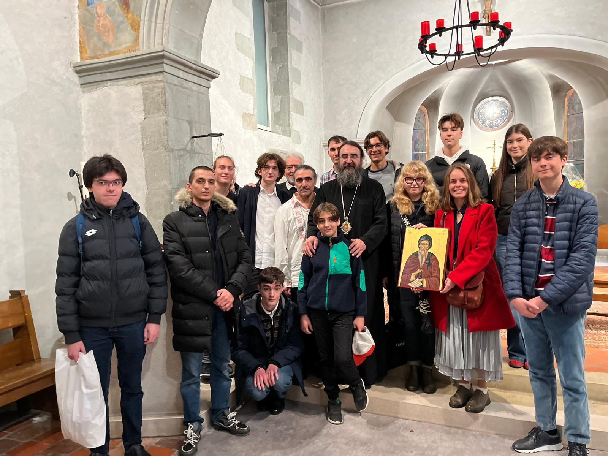
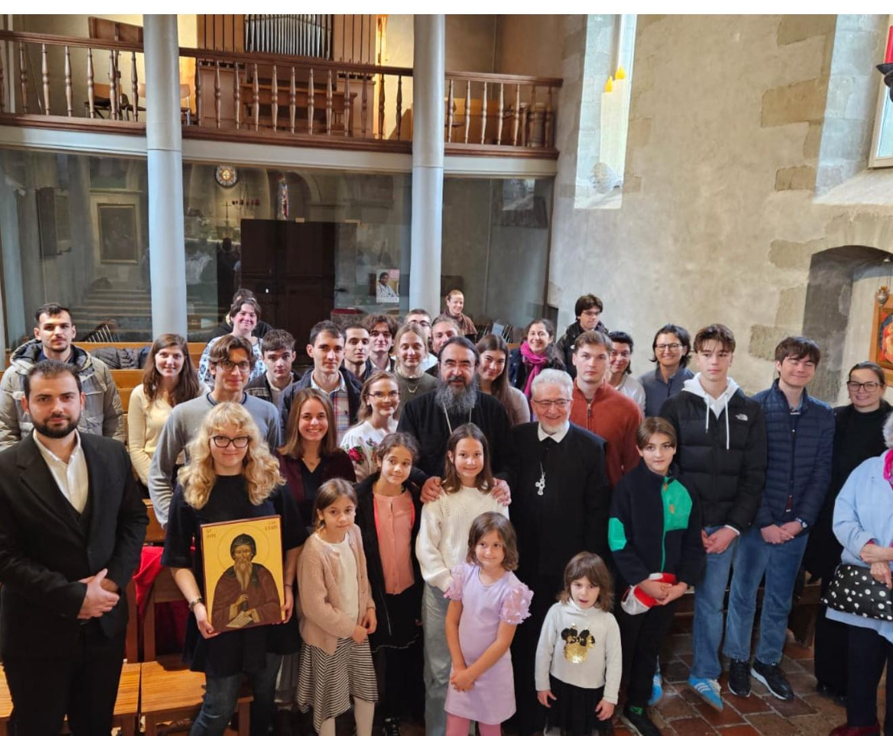
Dragi neptici, Doamne ajută!
Pe 2 noiembrie, biserica din Geneva a avut binecuvântarea de a-l primi în vizită pastorală pe Înaltpreasfințitul Părinte Mitropolit Iosif. Vizita sa a adus lumină, pace și bucurie în inimile credincioșilor, iar slujba arhierească săvârșită cu acest prilej a fost un moment de profundă comuniune și emoție duhovnicească.
În cuvântul de învățătură, Înaltpreasfințitul i-a îndemnat pe credincioși să trăiască credința cu inimă deschisă și să-și arate iubirea prin faptele milosteniei, amintind pilda bogatului nemilostiv.
După slujbă, tinerii din Nepsis și ceilalți tineri ai comunității au avut un dialog deschis cu Înaltpreasfințitul, primind răspunsuri pline de înțelepciune, blândețe și dragoste părintească.
Prin grija Părintelui Adrian Diaconu și implicarea enoriașilor, întreaga zi s-a desfășurat într-o atmosferă de sărbătoare, bucurie și rugăciune, descoperind frumusețea comuniunii în Hristos.
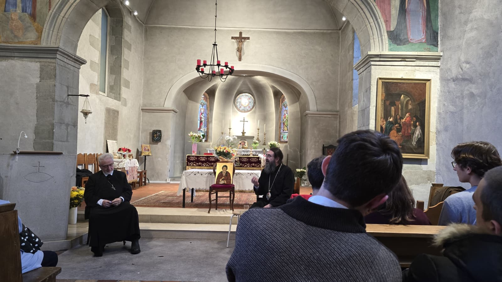
5 Octombrie 2025: Timpul Înnoirii - vizită la Baden
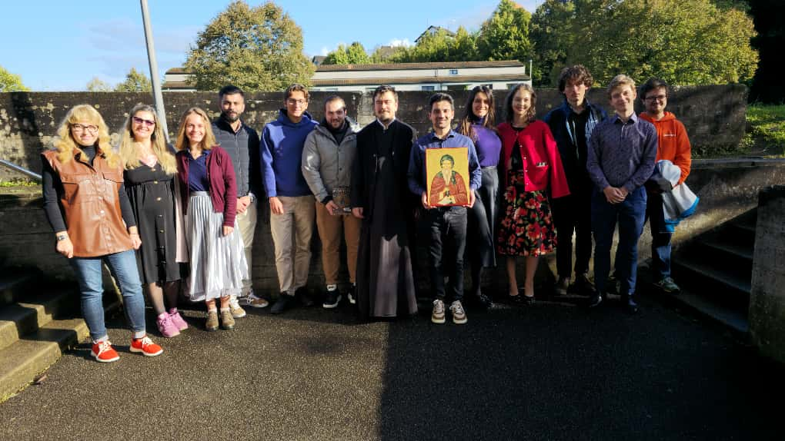
Duminică, 5 octombrie, am reușit, cu ajutorul Domnului și al Sfântului Ioan Casian, să reunim în același loc tineri din diferite cantoane ale Elveției, în cadrul proiectului "Nepsis Elveția: Timpul Înnoirii".
Am participat la Sfânta Liturghie la Parohia Românească Baden, după care am luat împreună prânzul.
Ziua a continuat cu sesiuni de prezentare Nepsis, teambuilding și brainstorming, în care am împărtășit idei, planuri și entuziasm pentru viitor.
Atât noii, cât și vechii voluntari Nepsis au venit cu multă energie și propuneri frumoase pentru următoarele activități — nădăjduim să le punem pe toate în practică!
A fost o bucurie sinceră să ne cunoaștem (mai bine) și să discutăm despre viitorul Nepsis!
Mulțumim Domnului, Parohiei Baden pentru ospitalitate și organizare, și tuturor celor care au participat la acest început de drum binecuvântat!
1 August 2025: Drumeție Nepsis Elveția
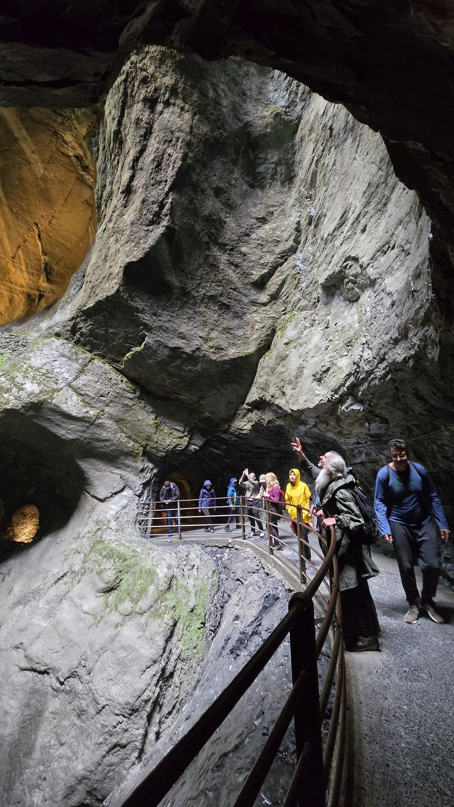
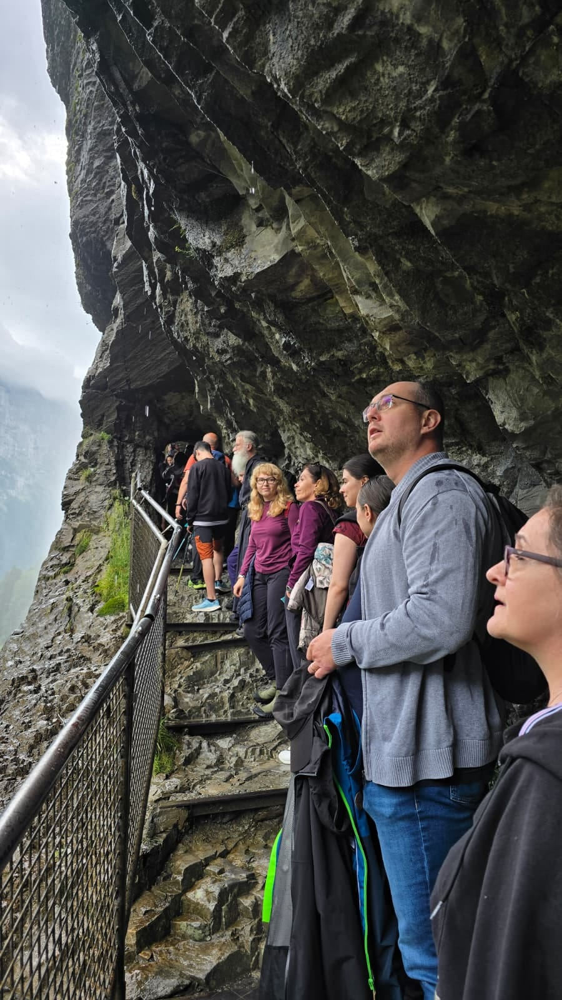
Doamne ajută 🙏! Pe 1 august am reușit să ne vedem cu Părintele Dionysius și să organizăm drumeția cu cateheză în zona Lauterbrunnen.
📖 Cateheza a fost legată de esența Sf. Împărtășanii, accentul fiind pus pe con-lucrarea noastră la această taină. Din referințele folosite în timpul catehezei menționăm Evanghelia după Matei cap. 26 și Origen - Comentariu la Evanghelia lui Matei cap. 26.
🚶♀ Am făcut o plimbare ușoară, prin valea Lauterbrunnen, cu opriri la cascadele: Staubbach, Spissbach, Aegertenbach și la cascadele subterane ⛰️ Trümmelbach.
Câteva momente sunt surprinse în pozele următoare:
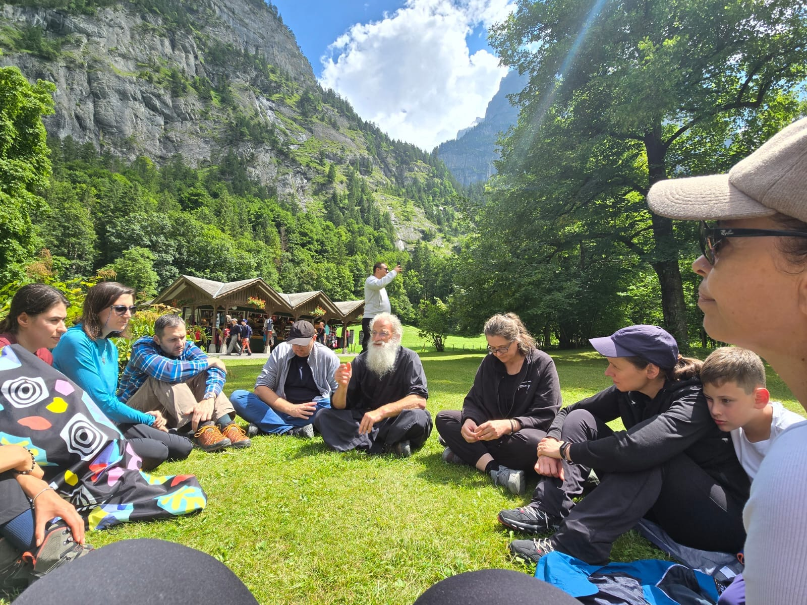
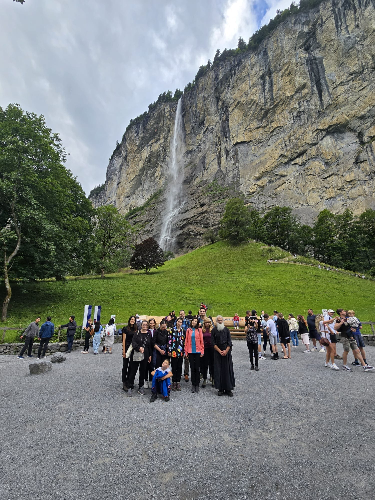
Colocviul Coordonatorilor Nepsis MOREOM
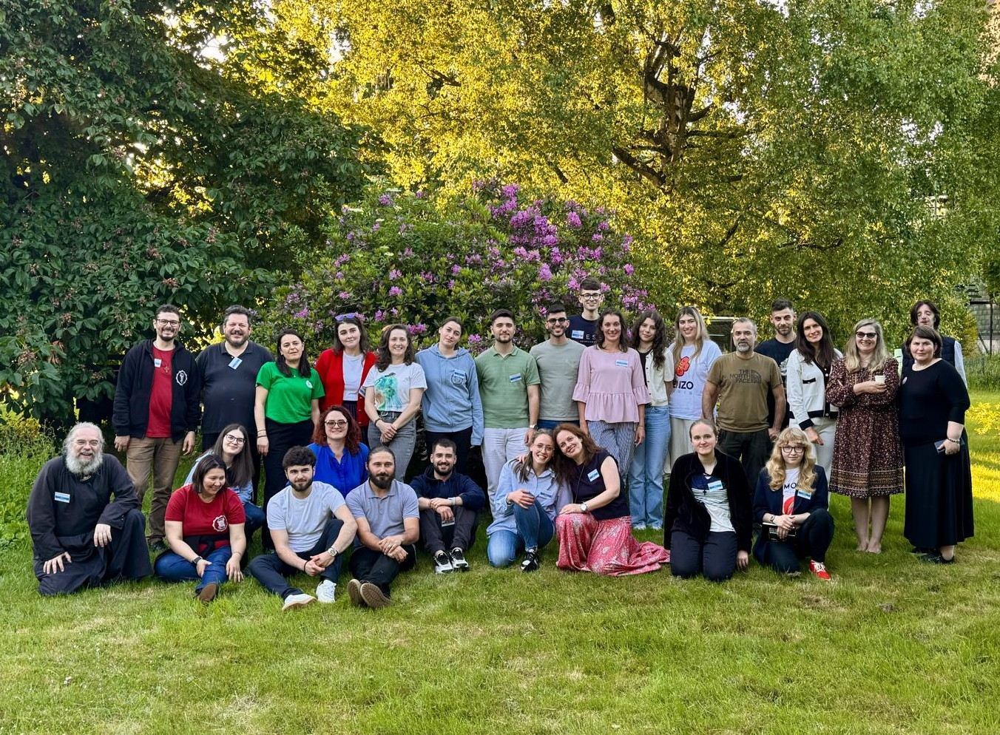
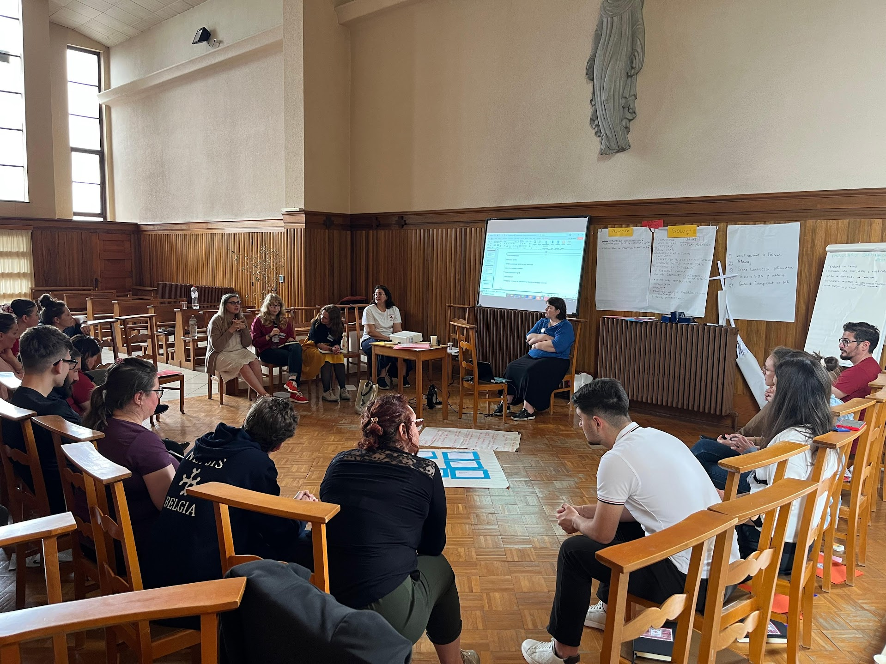
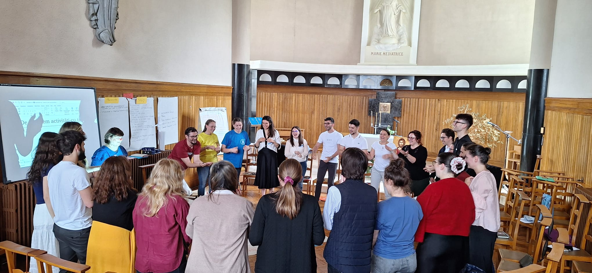
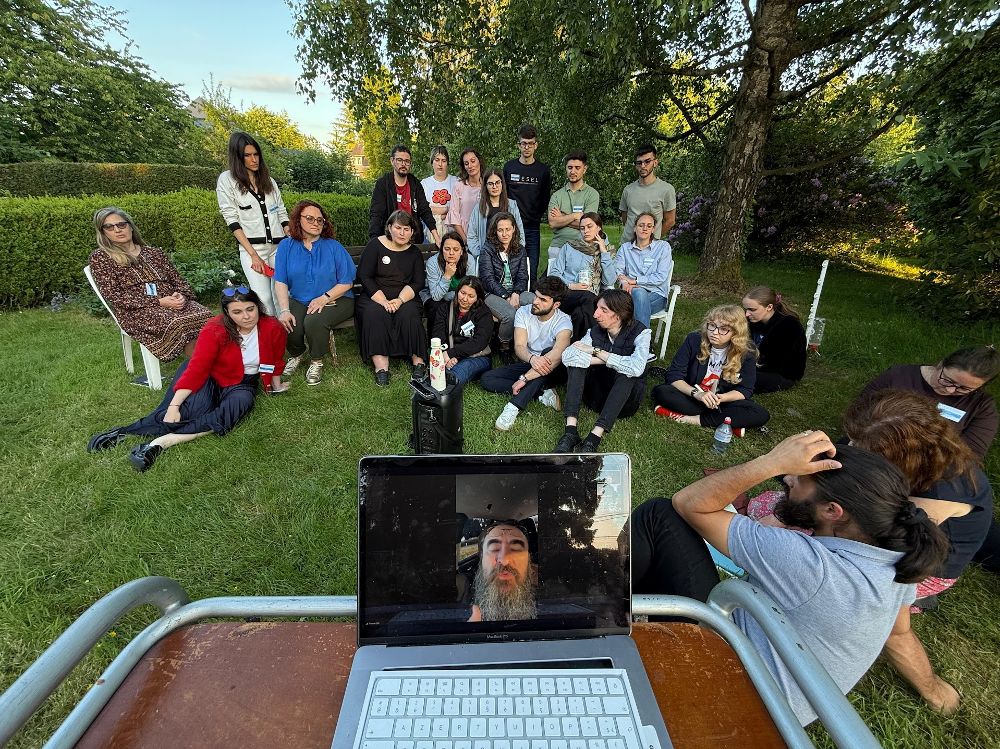
Cu binecuvântarea Înaltpreasfințitului Părinte Iosif, Mitropolitul Europei Occidentale și Meridionale, în perioada 29 mai - 1 iunie 2025, a avut loc, la Banneux (Belgia), Colocviul Coordonatorilor Nepsis, un eveniment care a reunit tineri reprezentanți ai organizației din mai multe eparhii ale Mitropoliei.
Alături de echipele Nepsis din Belgia, Franța, Italia, Olanda, Irlanda și Regatul Unit, delegația Nepsis Elveția a fost de asemenea prezentă cu bucurie la această întâlnire.
Scopul colocviului a fost cunoașterea reciprocă, schimbul de experiențe și de provocări întâmpinate în activitățile cu tinerii, precum și îmbunătățirea comunicării și colaborării între filiale.
Coordonatoarea evenimentului a fost Gabriela Pipirig, președinta Nepsis Belgia, cu o bogată experiență în lucrarea cu tinerii. Programul de lucru, foarte bine structurat, a ajutat să identificăm provocările comune și să dezbatem soluții adaptate fiecărei eparhii. Printre temele centrale s-au numărat planul de structurare a echipelor la nivel național, precum și conturarea profilului coordonatorului Nepsis.
Înaltpreasfințitul Părinte Iosif a fost prezent online la întâlnire, arătându-și susținerea față de această frumoasă misiune a Nepsis și încurajând implementarea concretă a concluziilor și ideilor rezultate din colocviu.
De asemenea, părintele Nicodim Petre s-a alăturat online, vorbind despre provocările întâmpinate în organizarea lucrării misionare și oferind răspunsuri la întrebările practice ale participanților.
Întâlnirea a fost totodată un prilej de comuniune și rugăciune, participanții luând parte la Sfânta Liturghie în capela din Banneux, bucurându-se de o atmosferă frățească și legând prietenii de durată.
Delegația Nepsis Elveția adresează mulțumiri organizatorilor și tuturor participanților pentru dialogul constructiv și pentru momentele frumoase petrecute împreună. Cu nădejde și entuziasm, continuăm misiunea noastră în mijlocul tinerilor.
Mulțumim lui Dumnezeu pentru această minunată oportunitate și ne rugăm să ne ajute să valorificăm roadele acestei întâlniri!
Vă invităm să citiți și articolele publicate de delegațiile din Italia și din Belgia.
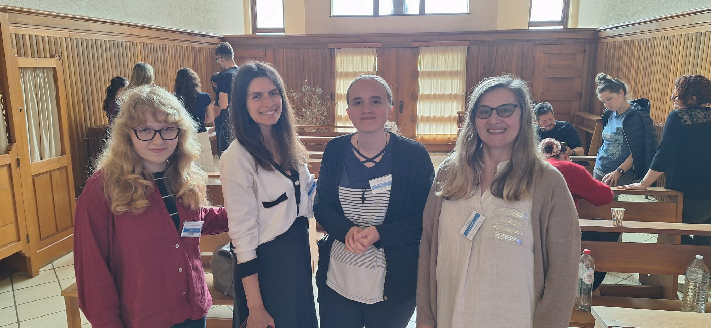
Pelerinaj la cimitirul militar român de la Soultzmatt
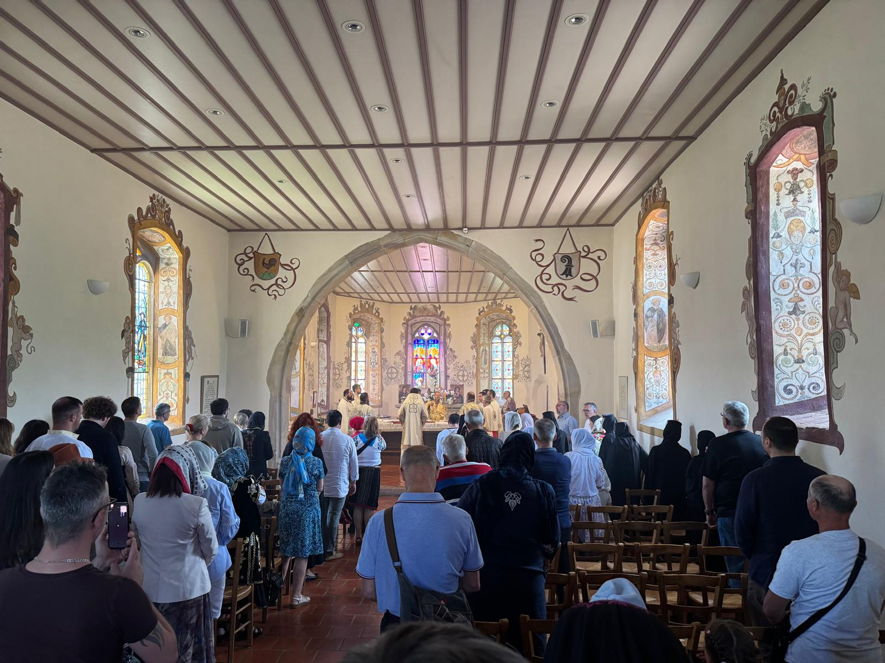
Sambătă 31 mai, am mers, din nou, în pelerinaj la Soultzmatt, loc al jertfei românești, pentru a-i pomeni cu evlavie și recunoștință pe eroii neamului nostru!
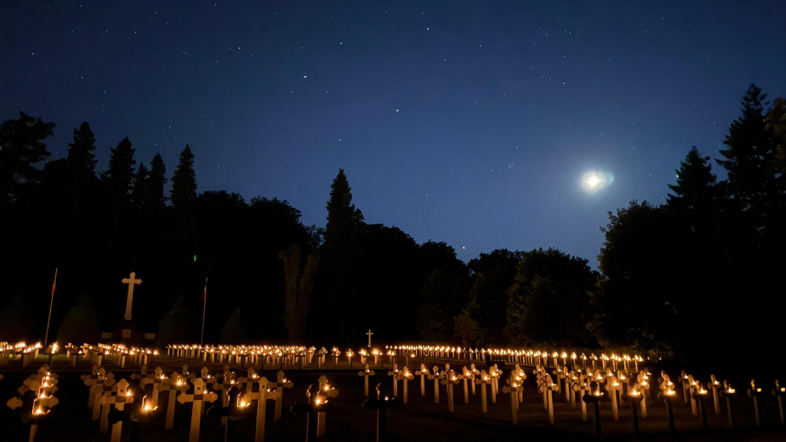
Vizită la CERN, Geneva
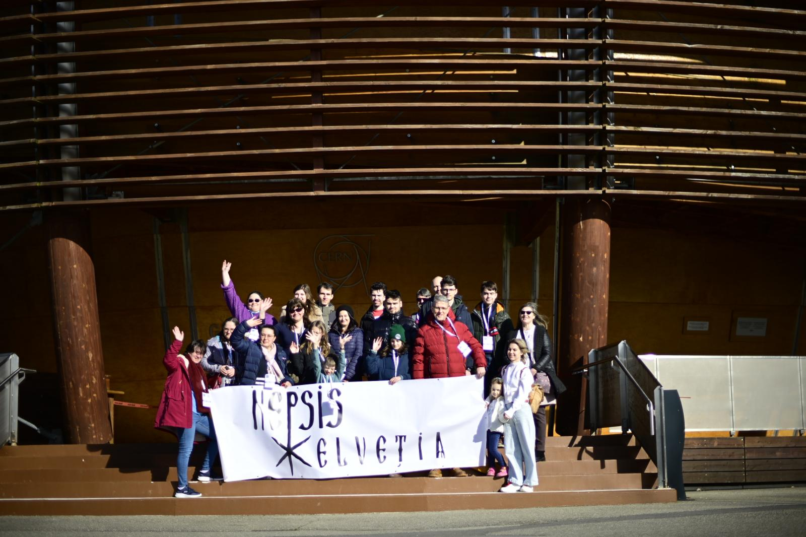
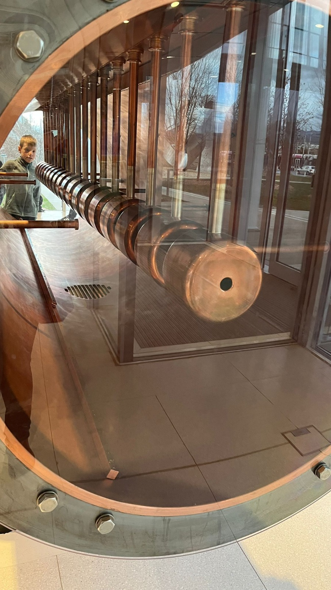
25 de tineri neptici dornici să cunoască cercetările CERN care au condus la descoperiri științifice folosite în diverse domenii, cum ar fi HTML și WWW !
O parte dintre participanți am fost, apoi, în vizită la Biserica coptă din Geneva pentru a ne închina la moaștele Sfinților Verena și Maurice (sfinți care au trecut la Domnul în secolele 3-4 pe teritoriul actual al Elveției).
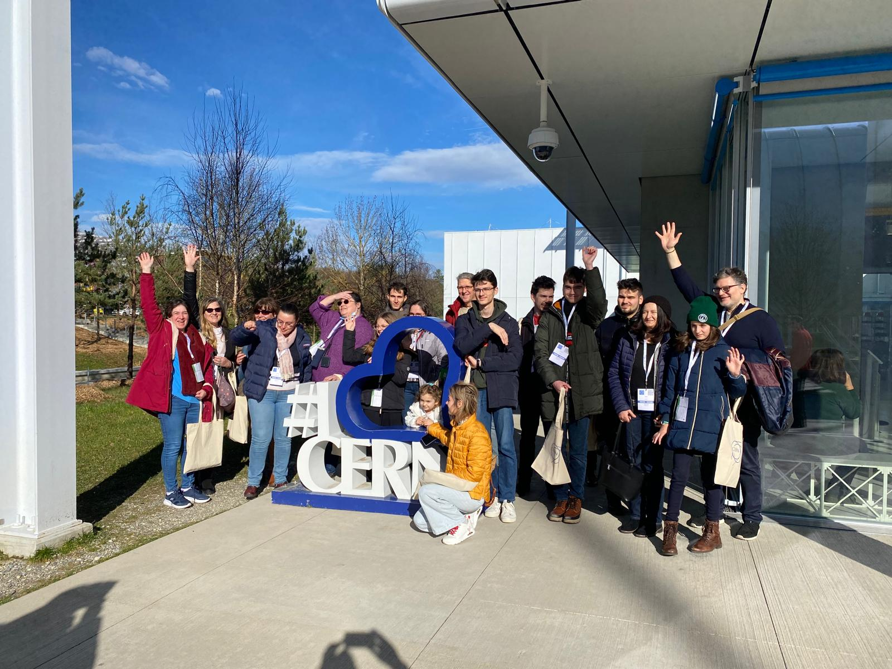
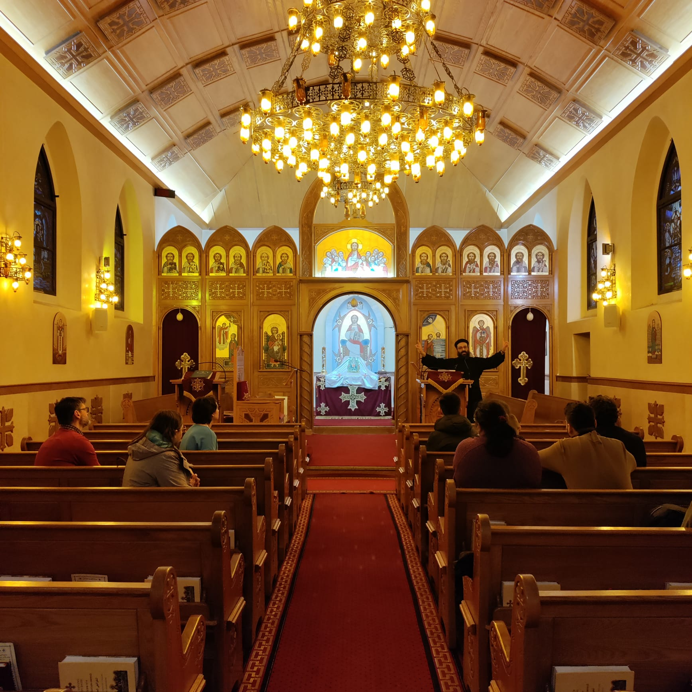
Anul 2024
Pelerinaj la Părintele Gabriel Bunge
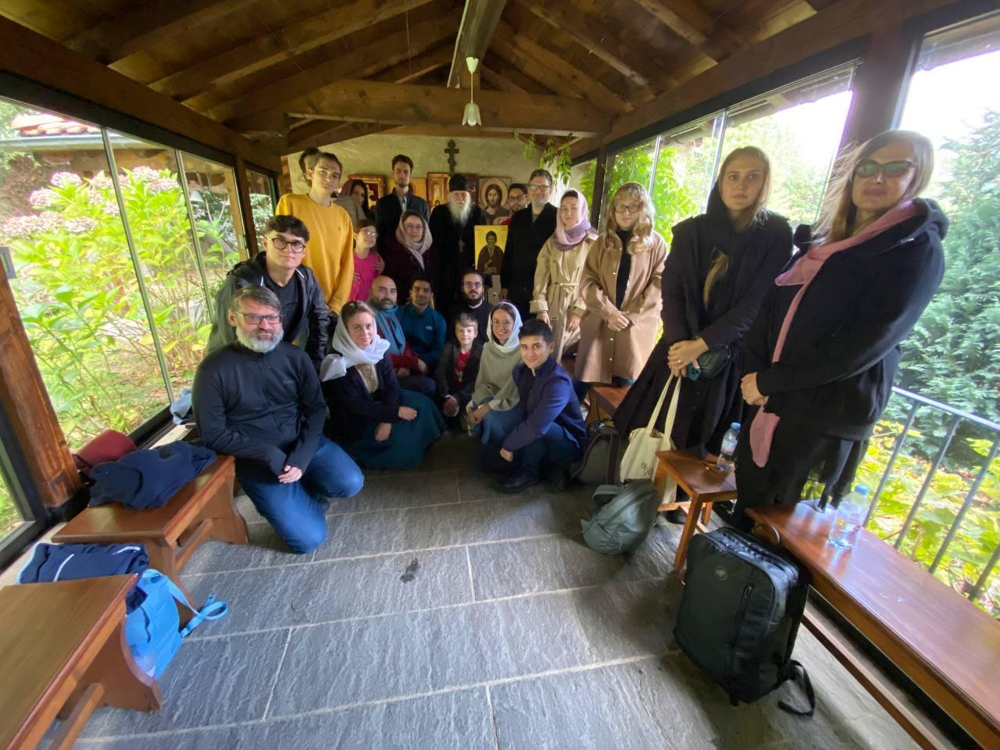
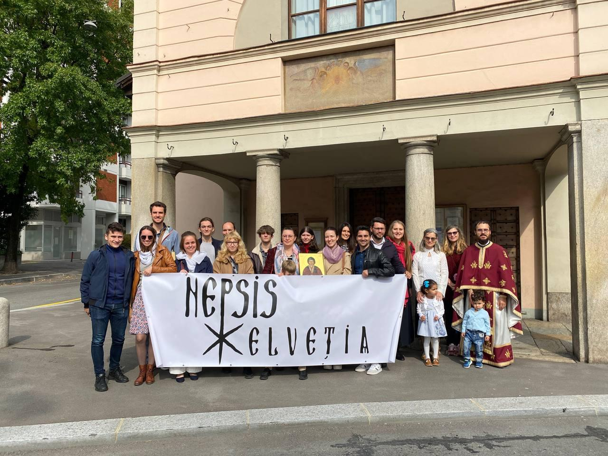
Weekendul din 5-6 octombrie 2024, organizat de Nepsis Elveția, a fost o binecuvântare și o mare bucurie duhovnicească. Sâmbătă, ne-am întâlnit la ora 14:30 pentru a urca împreună la Schitul Sfânta Cruce, unde am avut parte de un cuvânt de folos al Părintelui Arhimandrit Gabriel Bunge. Părintele ne-a oferit sfaturi prețioase despre viața duhovnicească, rugăciune și asumarea crucii, folosind numeroase exemple din cartea Iov.
Nepticii au avut ocazia să poarte dialoguri duhovnicești cu viețuitorii schitului Santa Croce. Seara s-a încheiat cu Ceasul 9 și Vecernia, urmate de o cină frățească la Lugano. Duminică dimineață, ne-am adunat la Parohia Românească din Lugano pentru Utrenie și Sfânta Liturghie, oficiată de Părintele Bogdan Dincă. Agapa care a urmat a întărit comuniunea dintre noi toți și a fost un prilej de cunoaștere și reflecție asupra weekendului petrecut împreună.
Pelerinaj la cimitirul militar român de la Soultzmatt
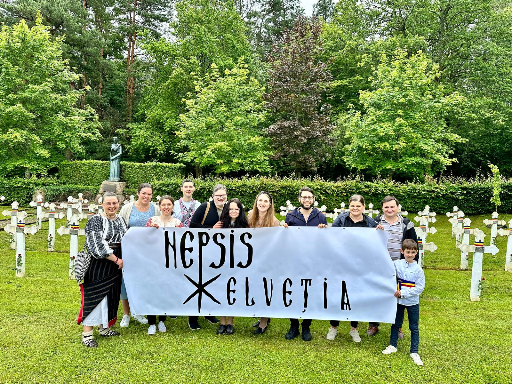
Ziua de sambătă 22 iunie a început cu slujba Utreniei urmată de Sfânta Liturghie săvârșită de PS Sofian Brașoveanul și PS Nectarie de Bretania împreună cu un sobor de preoți și diaconi.
La cimitirul eroilor din Soultzmatt, slujba de pomenire a tuturor adormiților și a eroilor țării noastre (Moșii de vară) a fost continuată de intonarea imnurilor României 🇹🇩 și al Franței 🇫🇷 și depunerea de coroane.
Voluntarii Nepsis Elveția 🇨🇭 au cumpărat și depus la fiecare mormânt din cele 553 câte un trandafir 🌹 și un șnur cu tricolor.
Ziua a continuat cu Agapa și un spectacol de cântece și dansuri populare.
Mulțumim tuturor nepticilor care au donat pentru florile depuse și voluntarilor din teren pentru ajutor !
Mulțumim și părintelui Emil si Parohiei Mulhouse pentru buna organizare și încurajare și sperăm să ne revedem anul următor.
Vizită la muzeu în Basel
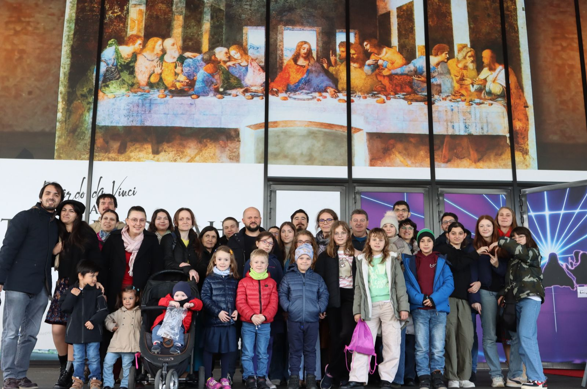
În Basel, sâmbătă pe 16 martie, nepticii s-au întâlnit pentru a merge la două expoziții interactive, cu o mică pauză la prânz în cadrul bisericii româneşti din Basel.
Priveghere Sf. Ioan Casian
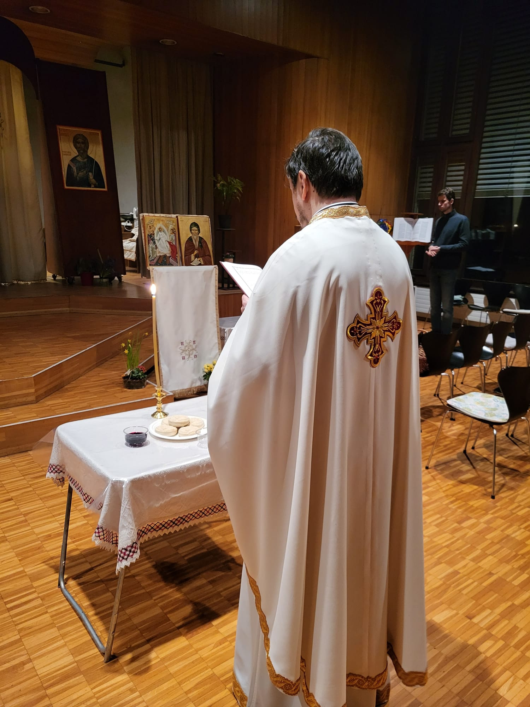
Am profitat de faptul că 2024 este an bisect şi am organizat miercuri seara pe 28 februarie slujbă de priveghere pentru cinstirea Sfântului Ioan Casian.
Dat fiind că este în mijlocul săptămânii s-au făcut două privegheri, la Basel şi Lausanne, pentru a fi accesibil pentru cât mai multor persoane.
Hramul Nepsis Elveția
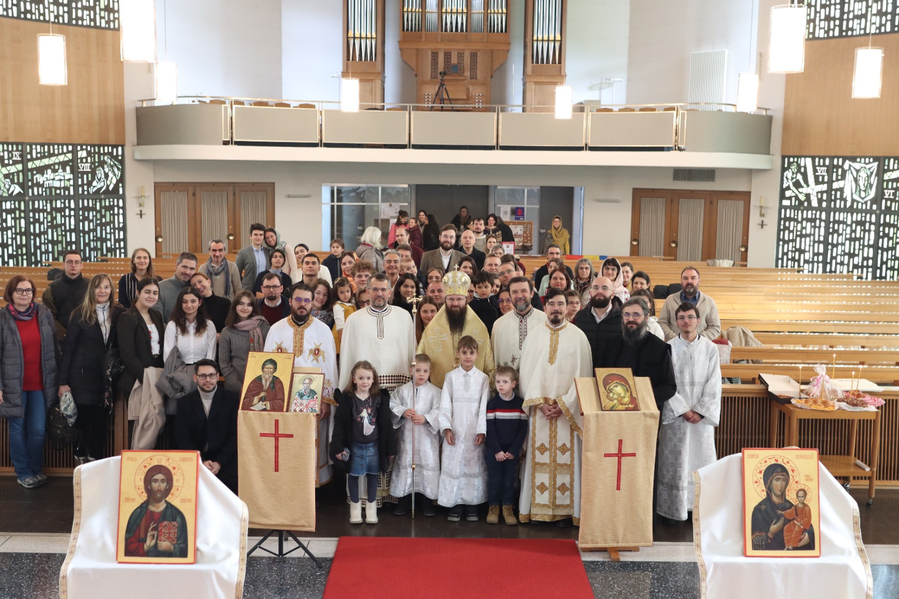
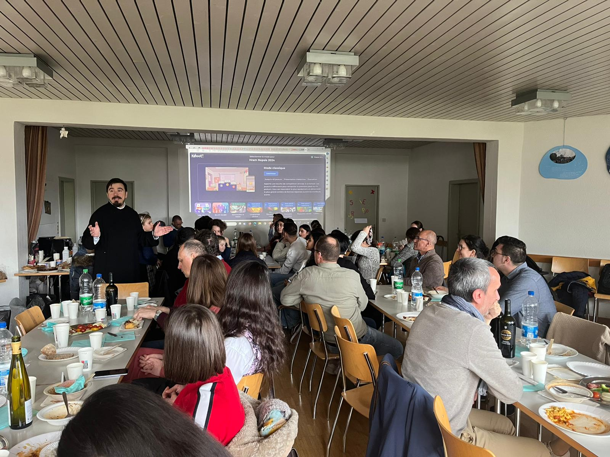
În 2024 am sărbătorit hramul ocrotitorului nostru, Sfântul Ioan Casian, în ziua de sâmbătă 24 februarie la Biserica Ortodoxă Română din Baden.
Cu această ocazie, Părintele Adrian Anca, care de ani de zile organizează cursurile online de cântare psaltică, a fost hirotonit întru duhovnic de către Preasfințitul Nectarie de Bretania. Îi urăm părintelui Adrian multă sănătate şi râvnă în misiunea primită!
Anul 2023
Proiecții de film în Lausanne și Geneva
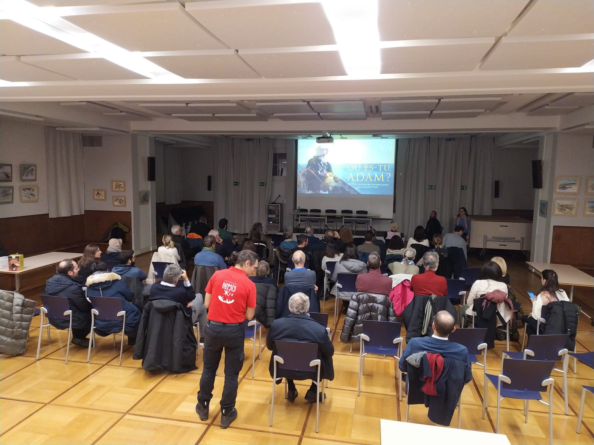
La început de decembrie 2023, am co-organizat trei proiecții ale filmului documentar "Unde ești, Adame?", despre viața călugărilor din Sfântul Munte Athos.
Sâmbătă, 2 decembrie, filmul a fost proiectat în colaborare cu Parohia Sfinții Români din Lausanne (dimineața) și Parohia Sf. Ioan Botezătorul din Geneva (seara).
Marți, 5 decembrie, filmul a fost proiectat în colaborare cu Asociația Greacă Melissa din Lausanne, seara.
Turul bibliotecii din St. Gallen
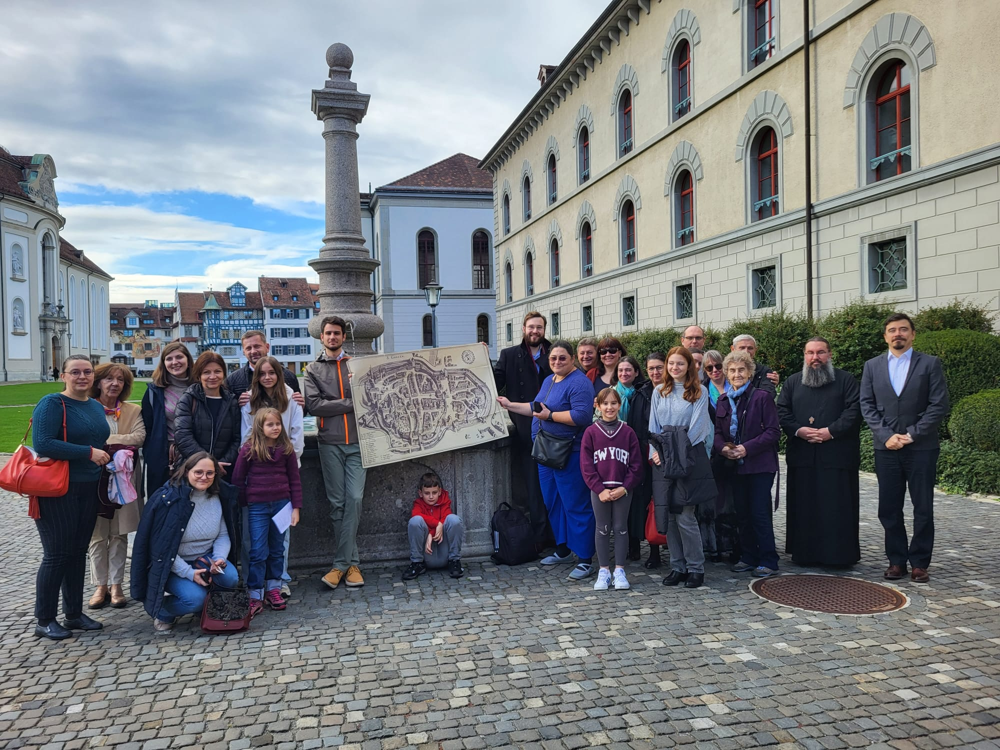
Sâmbătă, 28 octombrie 2023, Domnul ne-a făcut cadou o zi cu soare şi un ghid pasionat pentru detaliile abației din Saint Gallen: am vizitat biblioteca şi expozițiile permanente şi temporare din cavele complexului. Împreună cu părintele Mihail am fost apoi la biserica românească din St Gallen, unde a citit Acatistul tuturor sfinților şi participanții din diferite parohii s-au cunoscut mai bine la o mică agapă. Au mai rămas multe de vizitat, mai ales catedrala şi moaştele sfinților adăpostiți de ea. Sperăm să repetăm experiența, cu ajutorul Domnului.
Vizită la Neuchatel și priveghere pentru Sfântul Siluan Athonitul
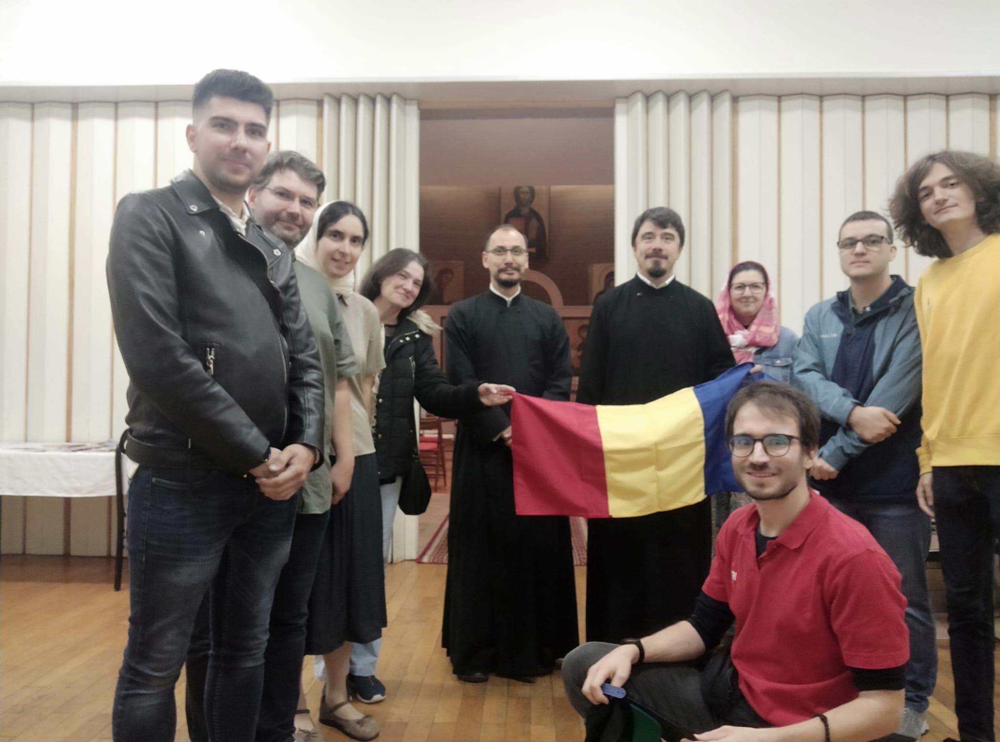
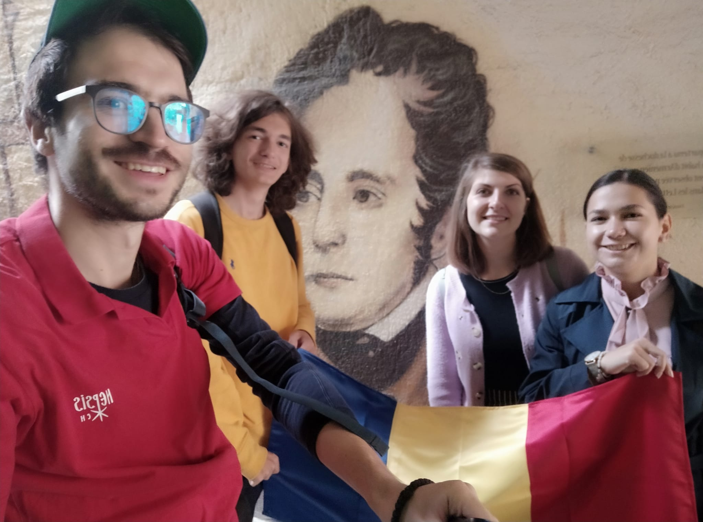
Cu ajutorul Domnului, în ziua de sâmbătă, 23 septembrie 2023, Nepsis Elveția a organizat o excursie la Neuchatel, după care am mers să ne întâlnim cu Părintele Marius la parohia românească din Neuchatel pentru a face slujba de priveghere a Sfântului Siluan Athonitul.
Am avut și un plan de vizită a orașului Neuchatel, începând cu centrul istoric cu fântânile sale medievale. Am admirat și picturile murale, apoi Castelul și Biserica Colegială. De acolo am coborât spre Pasarela Utopiei și ne-am îndreptat spre Biserica Roșie. Făcându-se seară, am luat un autobuz spre parohia ortodoxă, unde ne-am rugat împreună până s-a lăsat noaptea.
Dacă doriți să refaceți excursia, puteți vedea aici principalele puncte turistice pe care le-am urmărit.
Târg de carte în Lausanne
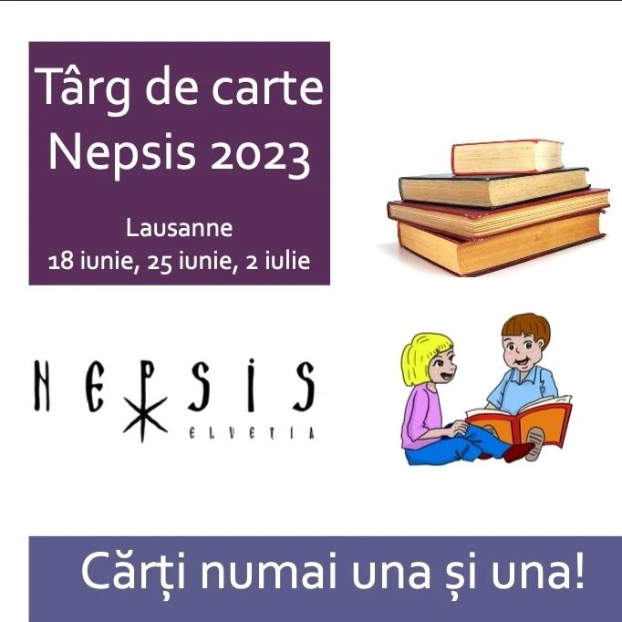
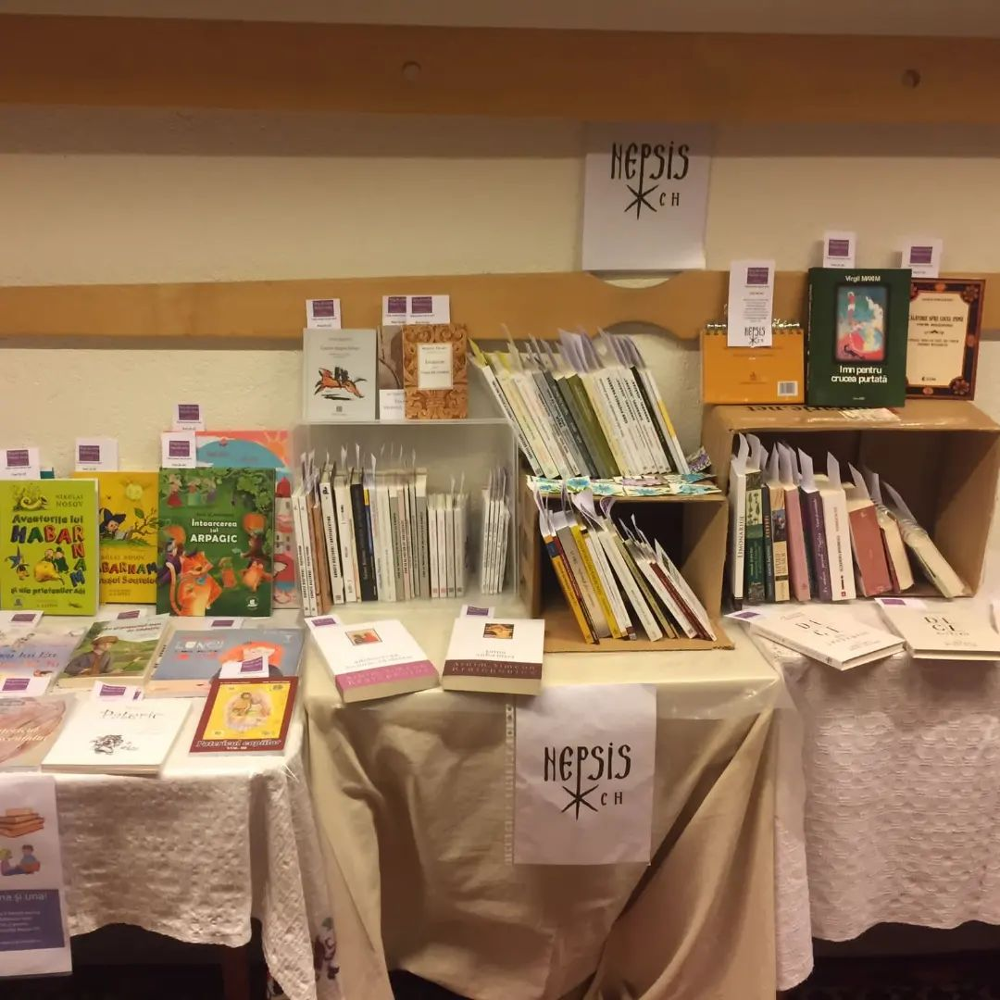
În Parohia din Lausanne am organizat, cu binecuvântarea Părintelui Adrian, un târg de carte care a început în iunie și a continuat în iulie și august.
Banii strânși la acest târg vor fi folosiți pentru achitarea traducerii slujbei Sfântului Ioan Casian (ocrotitorul Nepsis CH) și pentru finanțarea următoarelor activități Nepsis CH.
Anul 2022

Vizită la Părintele Gabriel Bunge

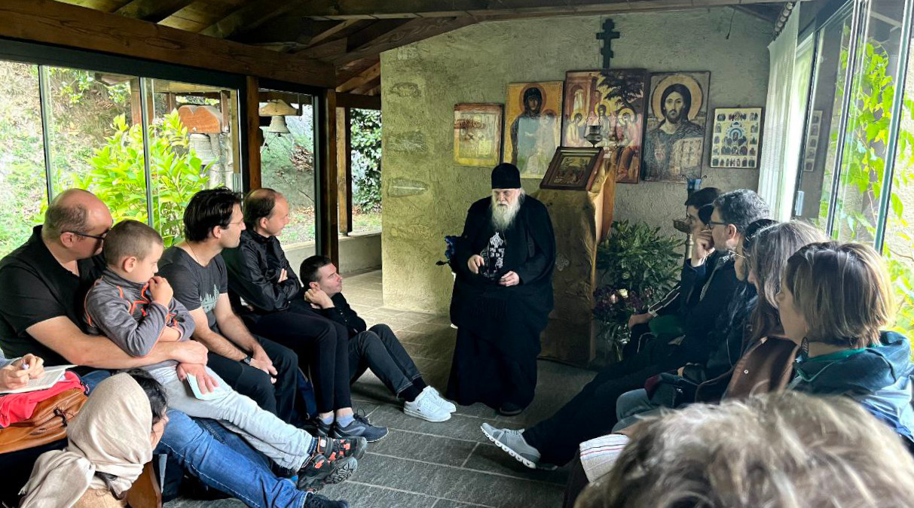
Un grup de 20 de neptici elvețieni, împreună cu Părintele Bogdan Dincă din parohia Lugano, au mers la Părintele Bunge în weekendul 15-16 octombrie 2022.
În vederea întâlnirii cu Părintele Gabriel am pregătit întrebări din cartea „Akedia” scrisă de sfinția sa și tradusă în românește la editura Deisis. Cartea cuprinde un comentariu la învățătura duhovnicească a lui Evagrie Ponticul despre cauzele lâncezelii sau plictiselii în viața duhovnicească, manifestările ei și mijloacele terapeutice necesare.
Două posibile manifestări ale akediei sunt cele două extreme: lenea și hiperactivitatea - amândouă la fel de vătămătoare. O vioară se poate distruge atât atunci când o punem în apă, cât și când o uzăm de prea mult cântat.
În ceea ce privește hiperactivitatea, iluzia agendei pline, sau activismul neobosit (chiar și în slujba Bisericii), acestea nu sunt decât o iluzie dacă ele devin un obstacol în comunicarea cu Dumnezeu și ne opresc de la relația, comuniunea tainică cu El. Părintele Gabriel a pus accentul pe faptul că în programul nostru zilnic, indiferent de cât de încărcată ne este agenda, rugăciunea (pravila) este prioritatea numărul unu. Rugăciunea este busola care ne arată direcția către Dumnezeu, fără de care suntem pierduți.
Detalii aici.
Priveghere pentru Sfântul Siluan, Conferință cu Pr. Constantin Coman, Concert Arvo Pärt


În noaptea dintre 23 și 24 septembrie, nepticii elvețieni s-au adunat la parohia din Berna (punctul cel mai central în Elveția) pentru a-l sărbători cum se cuvine pe Sfântul Siluan Athonitul, cu priveghere de noapte: Vecernie, Litie și Utrenie, urmate de Sfânta Liturghie. Alături de ei a fost un invitat special, Părintele Profesor Constantin Coman, dimpreună cu Părintele Laurențiu Precup, parohul Bisericii din Berna, și cu un sobor de preoți din parohiile învecinate.
Conferința de a doua zi este pe canalul YouTube al Nepsis Elvetia.
A urmat agapa pregătită cu emoții exclusiv de voluntarii Nepsis (care, deși amatori, și-au folosit cu mare succes abilitățile culinare!), iar programul nu s-a terminat aici. Pe seară, după vecernie, am participat la un concert simfonic la Camerata din Berna unde s-a interpretat, printre alte lucrări celebre de Vivaldi și Schönberg, și lucrarea „Spiegel im spiegel" scrisă de Arvo Pärt, un compozitor contemporan creştin ortodox de origine estoniană, ucenic al Sfântului Sofronie de la Essex, şi „nepot" duhovnicesc al Sfântului Siluan.
A doua drumeție-cateheză cu Părintele Dionisie

Într-o zi de sâmbătă, pe 17 septembrie, a avut loc o drumeție cu cateheză pe munte spre vârful Le Moléson (2,002m), împreună cu Părintele Ieromonah Dionisie, duhovnicul Mănăstirii românești de maici „Acoperământul Maicii Domnului” din Elveția, canton Fribourg.
Este a doua drumeție pe care o facem împreună cu Părintele Dionisie anul acesta, dânsul fiind un mare iubitor al muntelui și totodată un exeget dăruit de Dumnezeu pentru înțelegerea profundă a pasajelor biblice.
Tema catehezei a fost tâlcuirea capitolului IX din Facere, versetele 18-27 (blestemul lui Canaan) - continuare la cateheza anterioară despre intrarea lui Noe în arcă și golirea de sine - singura cale pentru a cunoaște cu adevărat glasul lui Dumnezeu și voia Sa cu noi.
Înregistrarea catehezei în limba franceză poate fi accesată pe canalul Youtube „Monastere Sciernes” al Mănăstirii.
Biciclete la Neuchâtel
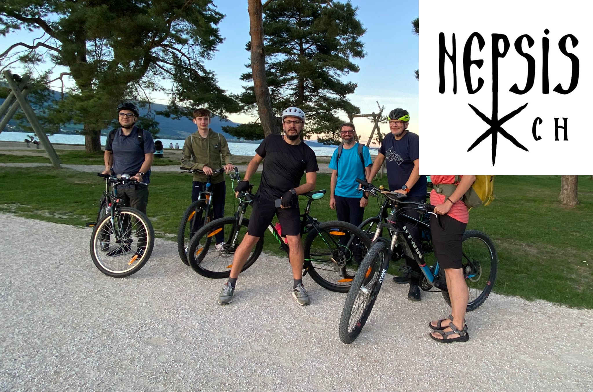
11 septembrie - un grup de bicicliști neptici s-a reunit în zona Neuchâtel, unde, conduși de Părintele Marius Manea (parohul Bisericii din Neuchâtel) am parcurs un traseu de 50 de kilometri cu bicicletele pe malul lacului, de-a lungul podgoriilor de viță de vie și a castelelor medievale din zonă.
1st hiking-catechesis with Father Dionysius
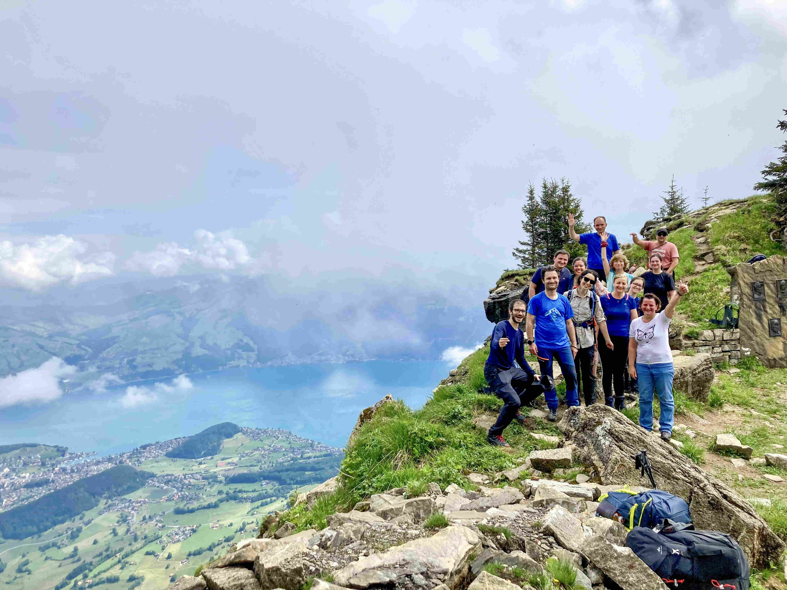
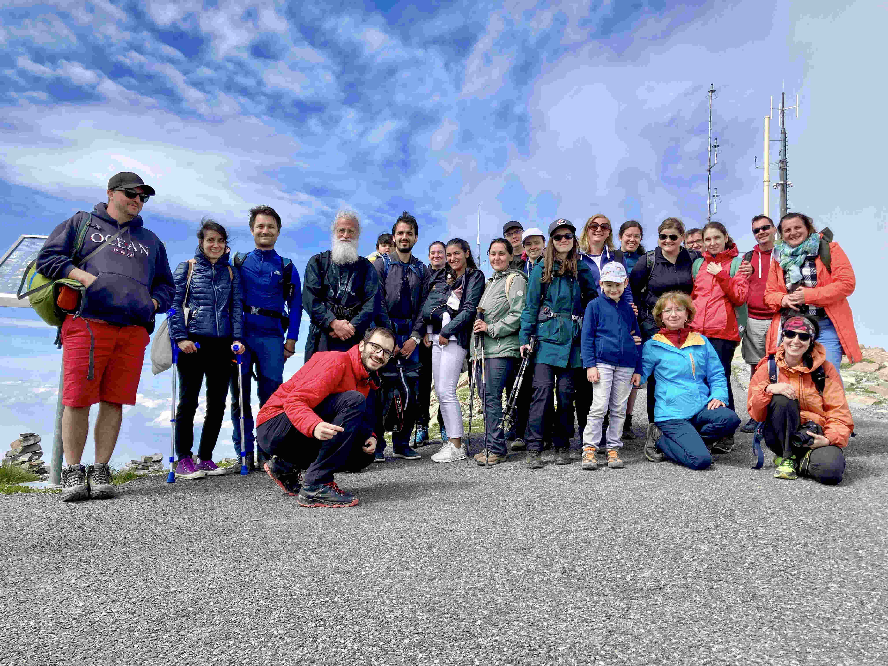
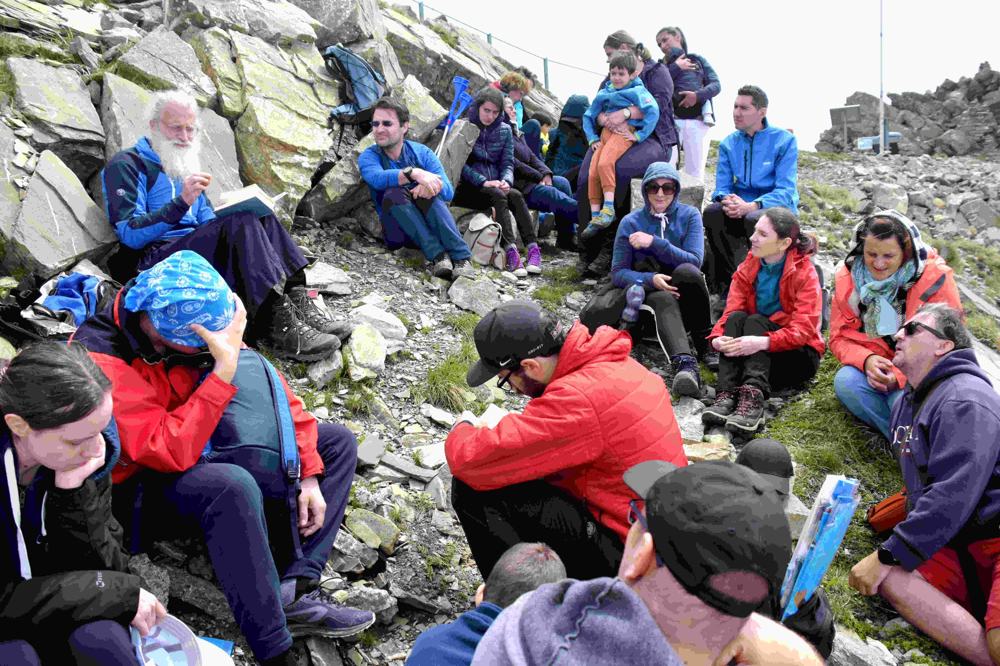
🇬🇧 This event was held in English (Father Dionysius does not speak Romanian)
Cu ajutorul Domnului, în ziua de luni, 6 iunie 2022 (zi liberă în Elveția), Nepsis Elveția a organizat o drumeție-cateheză în munții Alpi, în care l-am avut alături pe Părintele Ieromonah Dionisie, duhovnicul Mănăstirii românești de maici “Acoperământul Maicii Domnului” din Elveția.
Alegerea noastră pentru drumeție a fost vârful Niesen (2,362m), localizat la 40 de minute cu mașina de Berna. Putem spune că această ieșire a fost un real succes, întrucât am avut mai bine de 25 de participanți de toate vârstele și de mai multe naționalități, din toate colțurile Elveției (și chiar un participant venit special din Italia!).
Părintele Dionisie, mare iubitor al muntelui (și cu o condiție fizica de invidiat!), împreună cu doi dintre neptici, am pornit cu noaptea-n cap și au parcurs pe jos întregul traseu cu pornire din satul Mülenen (în total o diferenta de nivel de 1,700m). Pe parcurs ne-am intalnit la ore prestabilite cu o parte a grupului la stația intermediară Schwandegg (1,669m), și cu toți ceilalți pe vârf la ora 12, unde am luat împreună prânzul (picnic). Pe vârf ne-am bucurat să vedem printre nori lacul Thun și diferite vârfuri de peste 4,000 de metri din zonă.
Apoi ne-am retras pe muchia muntelui și ne-am așezat toți în jurul Părintelui Dionisie, care ne-a vorbit despre voia lui Dumnezeu și voia omului, cu referințe directe la Vechiul Testament (căderea lui Adam, arca lui Noe și chemarea lui Avraam în Pământul Făgăduinței).
Cei care doresc să facă cunoștință de la distanță cu Părintele Dionisie pot accesa înregistrările catehezelor pe care le organizează periodic pe canalul Youtube “Monastere Sciernes” al Mănăstirii.
Hramul Nepsis Elveția - Sfântul Ioan Casian
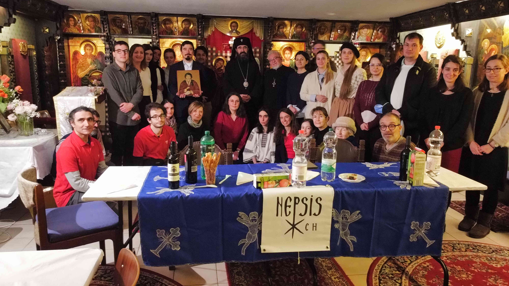
Sâmbătă pe 26 februarie 2022 ne-am adunat la Lausanne pentru a sărbători ocrotitorul Nepsis Elveția, Sfântul Ioan Casian. Înaltpreasfințitul Iosif, Mitropolitul Europei Occidentale și Meridionale, a fost în rândul nostru și ne-a răspuns la întrebări, alături de Părintele Adrian și Părintele Mihai.
La eveniment a participat și echipa Trinitas TV, care au realizat următorul reportaj:
Colectă pentru Huși
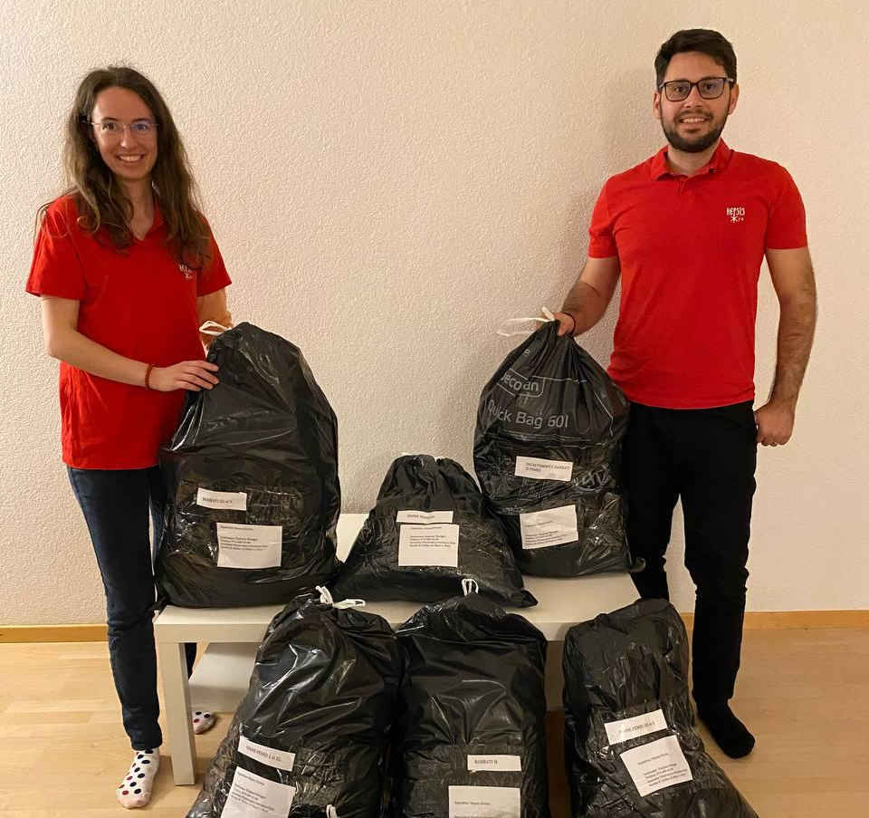
În perioada soldurilor de iarnă din Elveția (15 ianuarie - 15 februarie 2022) am organizat o colectă de haine noi pentru Asociația Filantropia Ortodoxă din Huși.
Mai multe detalii despre desfășurarea acestei campanii pe pagina dedicată.
Apariție media: (Basilica) Nepsis Elveția: Invitație la „shopping caritabil” pentru persoanele nevoiașe din Episcopia Hușilor.
Anul 2021
Priveghere la Berna de Sf. Siluan
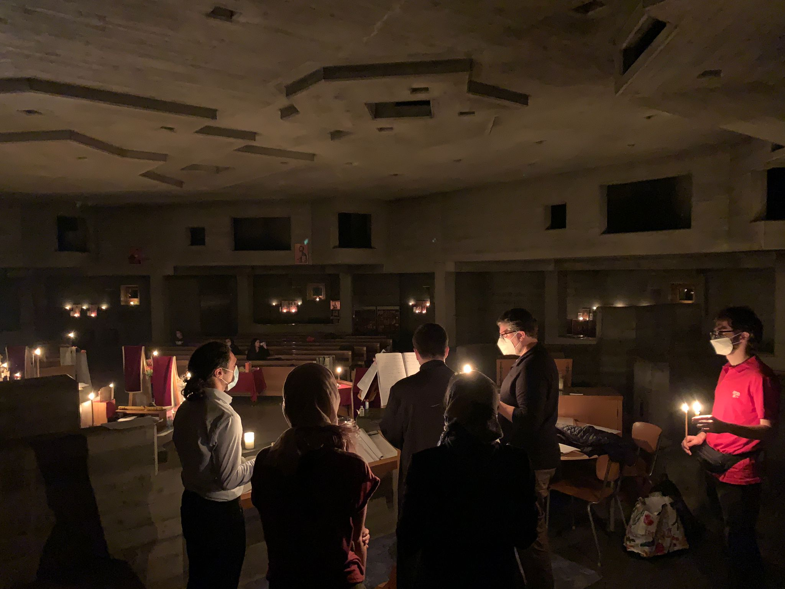
Pe 23 septembrie 2021 ne-am adunat la Berna, la un an de la Congresul NEPSIS MOREOM 2020 ținut în această parohie. Părinții Laurențiu și Cătălin au slujit privegherea închinată Sfântului Siluan Athonitul. Am avut bucuria de a avea în rândul nostru și o neptică din Nepsis Irlanda 🍀, care a cântat cu noi la strană. Laudă lui Dumnezeu pentru toate 🙏.
Podcast despre Serbarea de la Putna
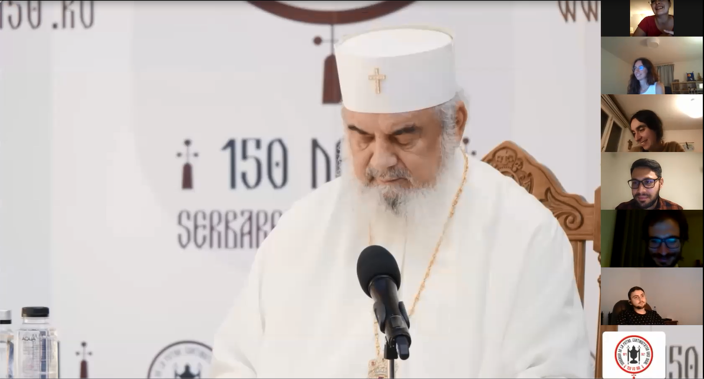
Ne-am adunat virtual pe Zoom pentru a asculta mărturiile celor 4 membri Nepsis Elveția care au participat la Serbarea de la Putna 2021 - Continuitatea unui ideal, care a avut loc la Mănăstirea Putna (județul Suceava) între 14 și 16 august 2021.
Am retrăit evenimentele, am urmărit secvențe video și poze însoțite de comentariul celor care au fost acolo.
Întâlnire la Neuchâtel
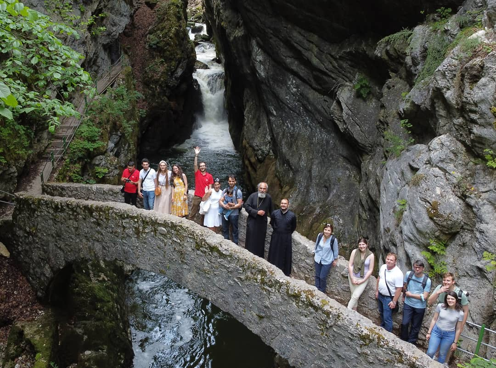
La invitația Părintelui Marius, am sosit sâmbătă 12 iunie 2021. Am făcut împreună acatistul Sf. Nectarie, după care am fost puși la masă de către membrii inimoși ai parohiei Neuchâtel. Apoi a urmat o discuție liberă cu Preasfințitul Marc, care ne-a bucurat din nou cu prezența sa. La final, am mers într-o drumeție la Cheile râului Areuse (Gorges de l'Areuse), unde ne-am imortalizat pe acest pod cu ajutorul unei drone.
Citește reportajul Basilica pentru mai multe detalii.
Priveghere la St. Gallen
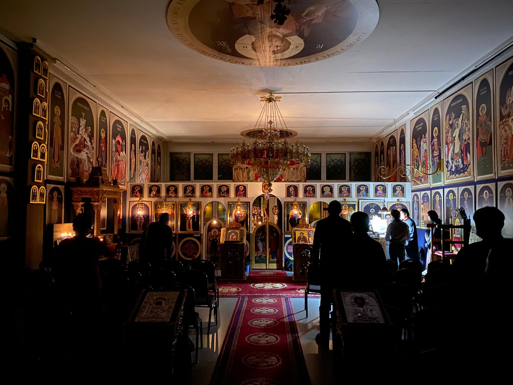
La invitația Părintelui Mihail, am fost la o priveghere de toată noaptea la St. Gallen vineri 12 martie 2021.
Hramul Nepsis Elveția - Sfântul Ioan Casian
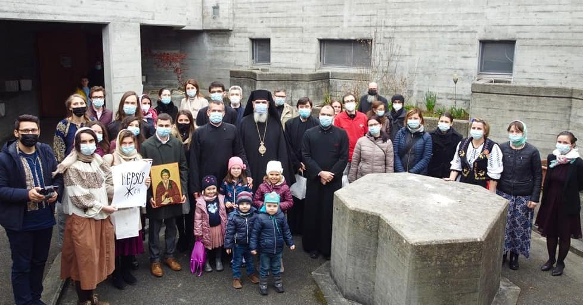
Ocrotitorul Nepsis Elveția este Sfântul Ioan Casian, a cărui zi de prăznuire este 29 februarie.
Pe 27 februarie 2021, ne-am adunat cu toții la Berna, unde am avut bucuria să-l avem printre noi pe Preasfințitul Marc care a ținut o conferință pe tema "Voia omului și voia lui Dumnezeu", urmată de un târg de Mărțișor. Mărțișoarele au fost confecționate de nepticii elvețieni.
Citește o descriere mai pe larg.
Anul 2020
Congresul Internațional NEPSIS MOREOM 2020 - Berna

Excursia în Alpi, turul ghidat al Bernei, conferințe și ateliere interesante, mese delicioase și Sfânta Liturghie arhierească - ți-am trezit curiozitatea?
Poți vedea poze, înregistrările conferințelor, testimoniale pe pagina dedicată congresului - secțiunea Amintiri.
Acoperire media:
Lecții online de muzică psaltică
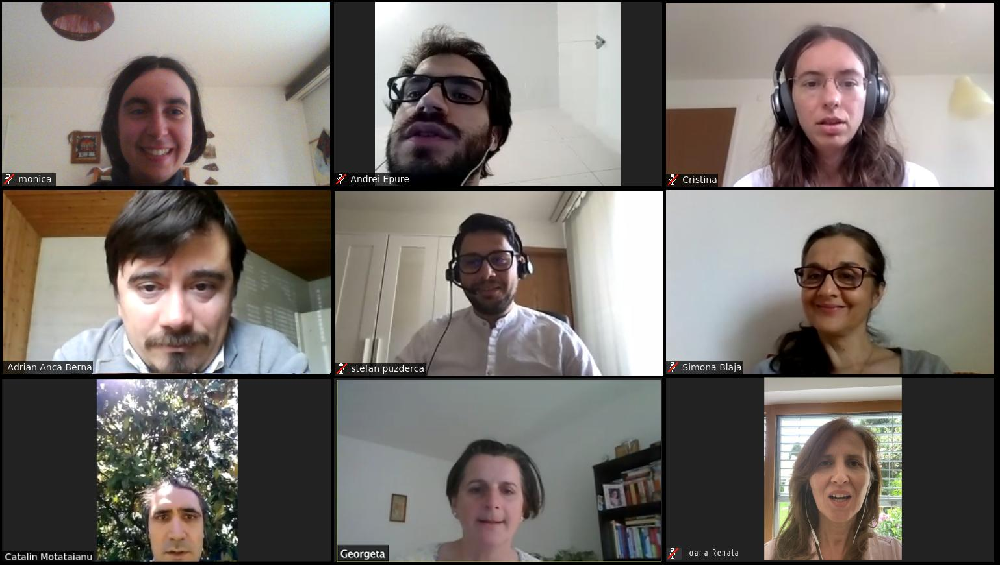
Între 13 aprilie și 26 mai, aproximativ 10 neptici elvețieni am repetat împreună, de 6 ori pe săptămână, Cântările Canonului Învierii. Fiind în orașe diferite, am repetat folosit aplicația Zoom.
Apoi, începând cu 2 iunie și continuând tot anul 2020, cursul "Glasurile muzicii psaltice" ținut de Nepsis Elveția s-a adresat publicului de pretutindeni. Mărturiile celor care au participat, din diferite țări, la acest curs de-a lungul anului 2020 le puteți citi pe pagina Grupului de Psaltică.
Hramul Nepsis Elveția - Sfântul Ioan Casian
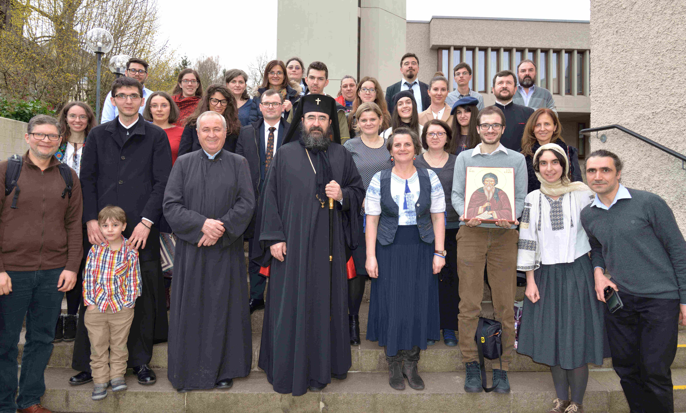
Ocrotitorul Nepsis Elveția este Sfântul Ioan Casian, a cărui zi de prăznuire este 29 februarie.
Pe 29 februarie 2020, ne-am adunat cu toții la Zurich, unde am avut bucuria să-l avem printre noi pe Înaltpreasfințitul Iosif, Mitropolitul nostru.
O descriere mai pe larg despre cum s-a desfășurat această zi puteți citi în acest document.
Anul 2019
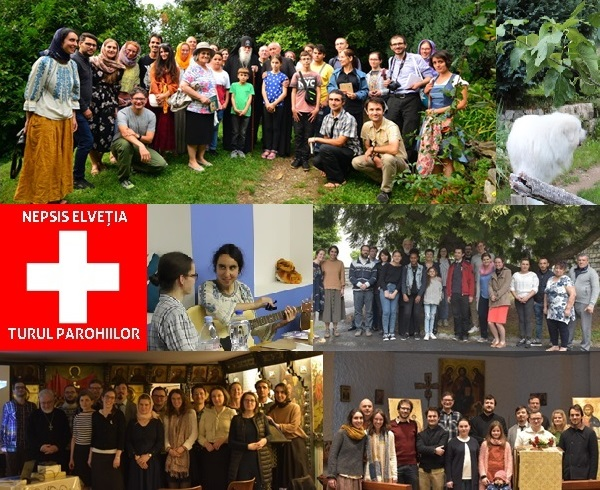
Acesta este istoricul activităților Nepsis Elvetia din anul 2019, care a avut în centru Turul Parohiilor. Adică ne-am adunat fiecare din ce oraș eram pentru a vizita câte o parohie - am participat la slujba de duminică, după care am stat de vorbă (uneori ne-am și plimbat) cu membrii parohiei respective. Mai jos puteți vedea o retrospectivă video/colaj (de pe canalul nostru YouTube), cât și calendarul evenimentelor:
Calendarul evenimentelor Nepsis Elveţia - 2019
| Dată | Eveniment | Detalii |
|---|---|---|
| 2 februarie 2019 | Turul parohiilor: parohia Zürich | afiș |
| 2 martie 2019 |
Turul parohiilor: parohia Lausanne Reportajul evenimentului este la paginile 25-26 din Revista Credința - nr Paști 2019 |
afiș |
| 24 martie 2019 | Turul parohiilor: parohia Luzern | eveniment FB |
| 18-19 mai 2019 | Weekend Duhovnicesc la mănăstirea românească "Acoperământul Maicii Domnului" din Elveția (sat Les Sciernes d'Albeuve, canton Fribourg). | formular |
| 9 iunie 2019 | Turul parohiilor: parohia Sion | formular |
| 15 iunie 2019 | Cimitirul militar românesc din Soultzmatt (Franța) - participare la slujba de pomenire a soldatilor români cazuți în Primul Război Mondial | detalii |
| 31 august - 1 septembrie 2019 | Turul parohiilor: parohia Lugano și vizitarea părintelui Gabriel Bunge. | afiș |
| 28 septembrie 2019 | Sfințirea paraclisului mănăstirii românești "Acoperământul Maicii Domnului" din Elveția (sat Les Sciernes d'Albeuve, canton Fribourg). | mesaj de la Maica Antonia |
| 3-6 octombrie 2019 | Congresul Internațional al Tinerilor Nepsis MOREOM, Gran Canaria, Spania | detalii |
| 27 octombrie 2019 | Turul parohiilor: parohia Fribourg | |
| 2 noiembrie 2019 | Turul parohiilor: parohia Geneva | poze Instagram |
| 17 noiembrie 2019 | Turul parohiilor: parohia St Gallen | poze Instagram |
Copyright Nepsis Elvetia. All rights reserved.